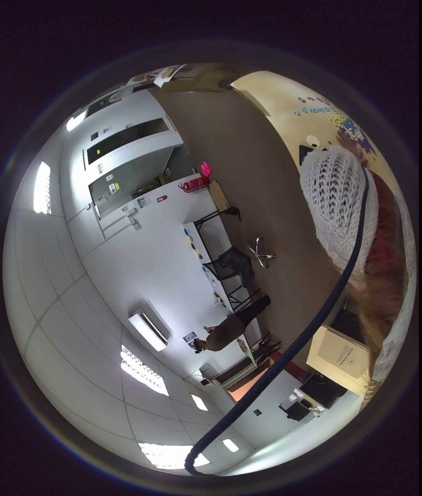
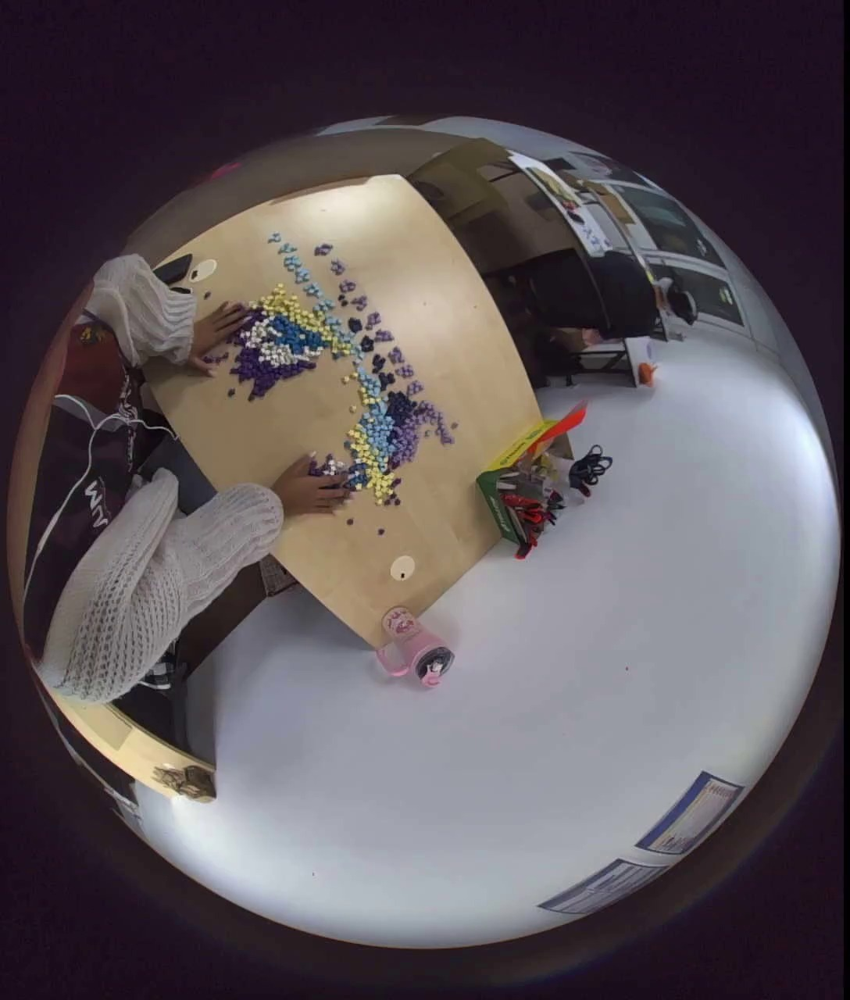
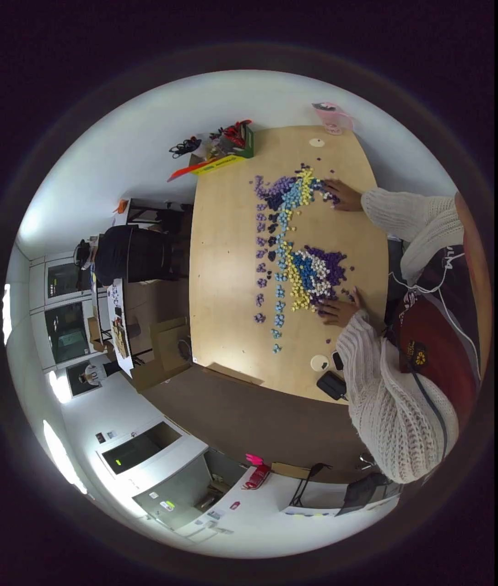
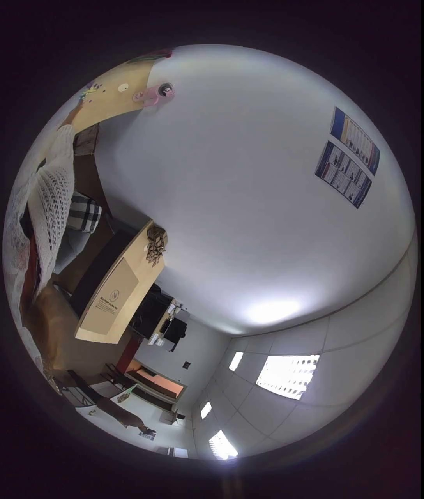
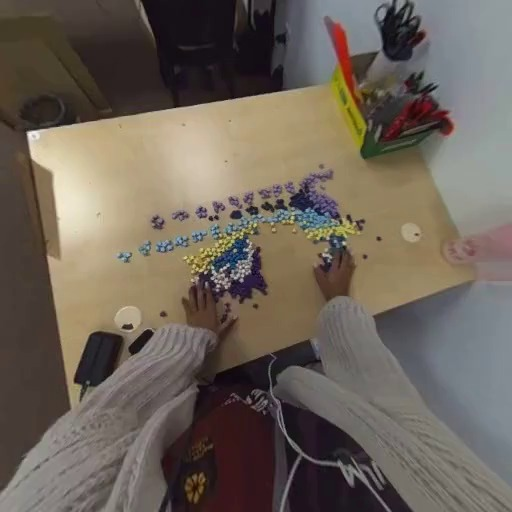
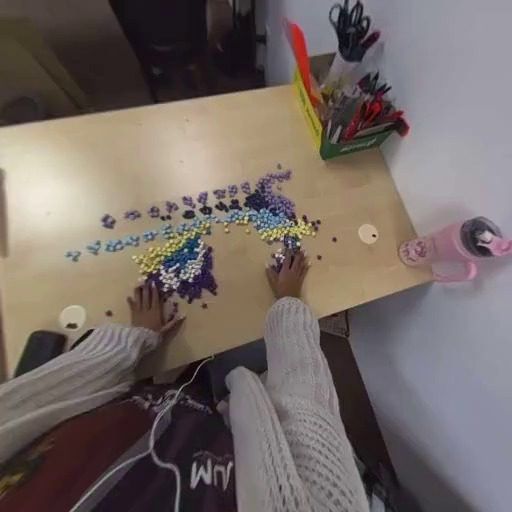

原始 6 路视频首帧






1. 单路stereo_left
单路 stereo_left 设置。
等待自动加载 GLB 1/4
2. 2路stereo
直接使用原始 stereo_left 和 stereo_right。
等待自动加载 GLB 2/4
3. 4路处理后鱼眼
cam0-cam3 fisheye 按 annotation.hdf5 标定展开到 512x512 pinhole 视角。
等待自动加载 GLB 3/4
4. 4路处理后鱼眼+2路stereo
6 路视频按同一时间戳同步抽帧后合并输入 VGGT-Omega。
等待自动加载 GLB 4/4